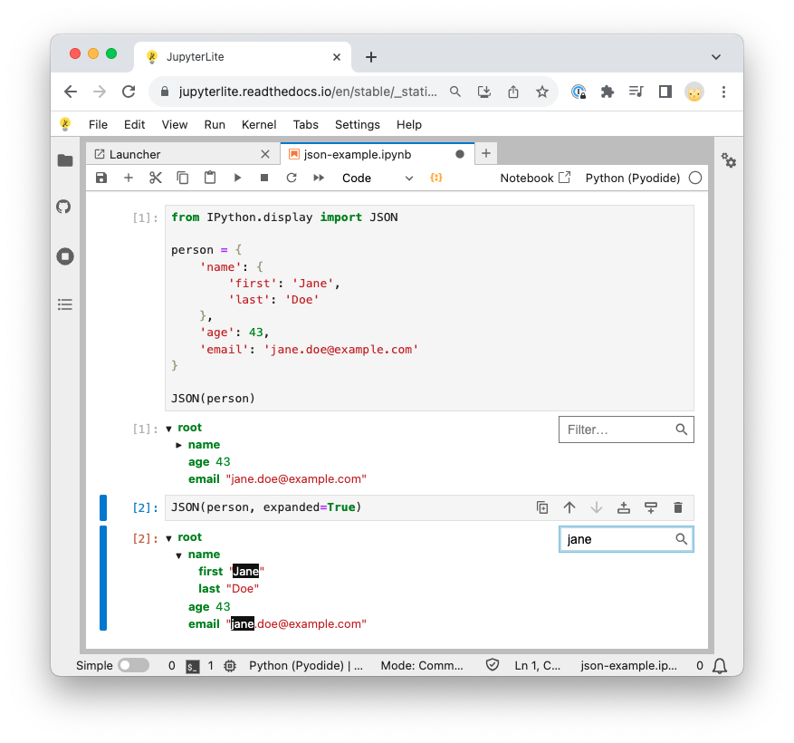

from IPython.display import JSON
person = {
'name': {
'first': 'Jane',
'last': 'Doe'
},
'age': 43,
'email': 'jane.doe@example.com'
}
JSON(person)<IPython.core.display.JSON object>November 25, 2023
The display functions from iPython is nice in an interactive Jupyter notebook. Unfortunately, it does not work equally well in Quarto or in a Jupyter notebook converted into html.
The JSON method is particularly helpful to explore a Python dictionary but does not work in rendered notebooks.
Nevertheless, it was good to get to know the functions and I add them here for the learning record.
see the Jupyter notebook (with nbconvert) and Quarto rendered version.
from IPython.display import JSON
person = {
'name': {
'first': 'Jane',
'last': 'Doe'
},
'age': 43,
'email': 'jane.doe@example.com'
}
JSON(person)<IPython.core.display.JSON object>
display(HTML("<em>HTML element</em>"))
display(Markdown("__Markdown title__"))
display(Math("a^2 + b^2 = c^2"))Markdown title
\(\displaystyle a^2 + b^2 = c^2\)
An example of a Quarto issue with display(). The elements are ordered differently in the code cell and the output.
'first element'
'third element''second element'Rendering of dictionaries with JSON does not work in Quarto or nbconvert.
A note how I render the Jupyter notebook of the post.
cd snippets ;
ruff format ipython-display.ipynb ;
jupyter-nbconvert --execute --inplace ipython-display.ipynb ;
nbdev_clean --fname ipython-display.ipynb ;
jupyter-nbconvert --to html ipython-display.ipynb --output ipython-display-nbconvert.html